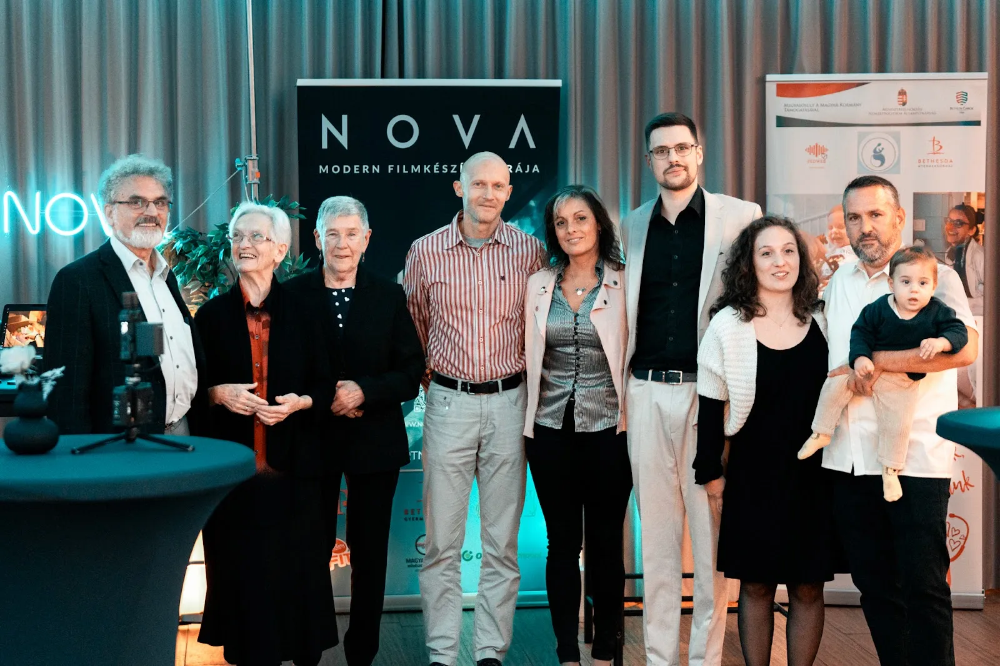

A Luminance a Nova partnereseménye. Ez a videó belemutat abba, amit napról napra építünk, és azokba az emberekbe, akikkel építjük.

A pohárköszöntőből
A hála az egyetlen szó, ami a lelkemben van. Az, hogy ennyien ültök itt, akik nap mint nap formáljátok az utunkat, az számomra lélegzetelállító. Minden egyes pillanat, döntés és lehetőség, amit adtatok nekem, hogy éljek vele, idáig vezetett.
Talán nem is a mérete számít annak, amit közösen hozunk létre. Lehet, hogy ez csak egy forgatás, egy több szálon futó, évek óta tartó együttműködés, egy stratégia megalkotása. A mérete nem számít, a döntésetek számít: az a pillanat, amikor egy ponton megszavaztátok nekünk a bizalmat.
Ebből a bizalomból jött létre az ország egyik legerősebb egészségügyi kommunikációja, egy piaci trendeket formáló oktatóplatform, egy innováción alapuló vállalkozói közösségépítő klub, és értékalapú márkák hangja, amit veletek közösen formálunk nap mint nap. Egy dolog köt össze mindenkit ebben a teremben: valami újat hozunk létre. És ez a dolog sokkal nagyobb, mint mi magunk.
„Ha valaki hisz benned feltétlenül, akkor az erőt fog adni neked, hogy minden egyes napon harcolj.”
Kaltenecker Kristóf
„Amikor valaki ránéz egy fotóra, amit készítettünk, általában a hozzátartozó érzések is odatolulnak.”
Kaltenecker Kristóf
„Egy dolog köt itt mindenkit össze: valami új dolgot hozunk létre. És ez sokkal nagyobb, mint önmagunk.”
Kaltenecker Kristóf

A Stratégia fejezet címe: Válaszd a nehezebb utat. A jövő, amelyet elképzeltél, olyan döntéseket is kérhet tőled, amelyeket a jelenlegi sikereid alapján még semmi nem indokol.
A stratégia itt nem a tervezés művészete, hanem az önuralomé: újra és újra a nehezebb utat választani, és pontosan tudni, miért érheti meg.
Nem kell ma az egész utat belátnod. Elég, ha tudod, miért indulsz el, és megteszed azt a következő lépést, amelyet már most tisztán látsz.